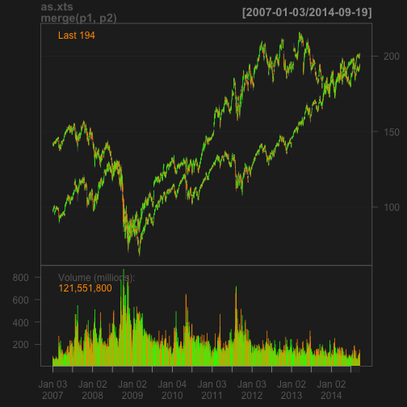

Assets Comparison
A simple app
CX
What the app does
- Plot a single asset from a specific sorce in a specific date range
- Plot two assets together if their price range are close
- Plot two assets separately if their price range are far from each other
How it is done
- Using package to fetch the data
- Using chartSeries function to plot the data
Problem and future development
- At this point, only 'yahoo' source works, ther sources cause problem when app is deployed, though they work find locally
- More features such as log scale plot, technical indicators, can be added later
An example
Assets: SPY, IBM
library(quantmod)
p1 <- getSymbols('SPY', auto.assign = FALSE)
p2 <- getSymbols('IBM', auto.assign = FALSE)
chartSeries(as.xts(merge(p1, p2)))
